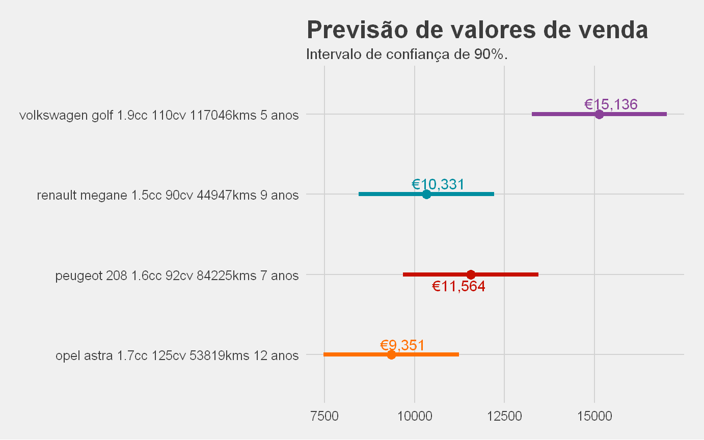

By António Cruz | January 16, 2017
Vamos supor que você pretende comprar um carro usado. O que faz?
Bem, presumo que das primeiras coisas é consultar algum site de compra e venda de carros usados e procurar algum carro com as características que considera relevantes de forma a ter uma ideia das alternativas e preços. Provavelmente até visitará algum stand recomendado por um amigo seu ou que fica perto da sua casa ou trabalho.
Mas, qual a melhor compra que pode fazer?
E se que quiser vender o carro? qual o preço que deve pedir?
Dependendo dos seus objetivos, se é comprar ou vender, se já escolheu a marca e modelo ou se apenas tem um limite de valor, se privilegia o preço, a idade ou os kms, todas estas questões vão influenciar a sua decisão final e eventualmente gerar alternativas demasiado numerosas que permitam um enfoque nas propostas mais interessantes.
A compra ou venda de um carro é apenas o pretexto para exemplificar algumas técnicas da ciência de dados que poderão ser aplicadas perante situações de incerteza, nomeadamente a simulação e a regressão linear.
A mesma lógica poderia ser aplicada se estivéssemos a falar de casas, de escolhas a serem feitas por departamento de compras de uma organização, a decidir quantos funcionários devem estar na loja a um determinado dia ou hora, qual a quantidade a armazenar de determinado produto ou a tentar perceber qual o melhor preço a praticar.
Embora este seja um exercício académico no sentido em que coloco questões que certamente seriam diferentes das colocadas por alguém que efetivamente quisesse comprar ou vender um carro, os dados são reais e as questões colocadas parecem-me suficientemente práticas para acrescentarem valor.
Recolha de dados
Como em todos os processos de decisão, é necessário obter alguma informação prévia para podermos tomar uma decisão informada.
Em conformidade recolhi informação sobre viaturas usadas em dois sites de referência em Portugal e extrai os dados relativos às viaturas que cumpriam os seguintes pressupostos (os meus requisitos mínimos):
Carros a gasóleo;
Carros com mais de 20 000 kms e menos de 200 000 kms;
Preços entre 4 000€ e 15 000€;
Sem preferências por marca ou modelo.
Das viaturas recolhidas selecionei as marcas que tivessem pelo menos 235 viaturas e foi efetuado algum trabalho de transformação de forma a ter dados estandardizados e devidamente preparados para análise. Entre estas transformações estão a eliminação de viaturas muito antigas, marcas com poucas viaturas, normalização de nomes, etc.
Da análise prévia ficamos a saber algumas coisas da estrutura dos nossos dados, nomeadamente:
Temos um conjunto de 8868 viaturas que são caracterizadas por 10 variáveis: Descrição, marca, modelo, preço em Euros, Kms realizados, idade em anos, a potência em cavalos, a cilindrada, a média dos kms realizados por ano e qual o site de onde foi extraída a viatura;
A Renault é a marca que tem mais viaturas, 2184;
Foram extraidas 3284 viaturas do site1 e 5584 do site2;
A Peugeot é a marca com mais modelos, 20;
A marca mais cara é a Audi com uma média de preços de €12,367 e uma mediana de €12,990;
A marca mais barata é a Fiat com uma média de preços de €9,901 e uma mediana de €9,900;
O gráfico seguinte ajuda-nos a perceber melhor as possíveis correlações entre as variáveis quantitativas:
O preço correlaciona-se negativamente com os kms realizados e a idade, embora essa correlação seja mais forte com a idade (-0.72 versus -0.41), i.e., é mais importante a idade que os kms no preço de venda.
Mas temos uma descoberta que é contrária ao senso comum: o preço correlaciona-se positivamente com a média dos kms anuais, i.e., as viaturas que fazem mais kms por ano tem preços mais elevados.
Se repararmos, a média dos kms por ano correlaciona-se negativamente com a idade e essa pode ser a razão que explica esta estranha descoberta: os carros mais novos são mais utilizados e fazem em média mais kms e quando vão ficando mais velhos a sua utilização vai diminuindo. Parece ser uma explicação razoável e que faz sentido.
Confirmando o senso comum, a Volkswagen é a marca que menos desvaloriza quer em termos da idade quer em termos dos kms realizados.
Podemos também constatar que a desvalorização da idade e dos kms está correlacionada positivamente, conforme análise de correlação anterior, embora se verifique um outlier com a Fiat que desvaloriza mais com os kms do que com a idade.
Por último conseguimos claramente identificar 3 grupos de marcas, 3 com pouca desvalorização, 3 com média desvalorização e 5 com forte desvalorização.
Se o vosso interesse é escolher uma viatura que desvalorize pouco, o número de marcas com potencial interesse reduziu-se substancialmente.
Quais são as melhores alternativas?
Retomando a questão inicialmente colocada e considerando que resultou da minha pesquisa de mercado 8868 alternativas possíveis, o que devo fazer?
Certamente que não será viável ver as fotos ou consultar o equipamento e observações de todas estas viaturas, muito menos inspeciona-las fisicamente.
Mas e se conseguíssemos reduzir esse universo a apenas às 10 melhores alternativas em função de um determinado critério?
Para responder a essa questão vou considerar 4 cenários possíveis, nos quais as variáveis de decisão são o preço, a idade, os kms e a potência:
Cenário 1: Não sei bem o que quero e, portanto, as variáveis de decisão valem todas o mesmo para mim;
Cenário 2: valorizo mais o preço, i.e., o carro é para o meu filho e não quero gastar muito dinheiro;
Cenário 3: valorizo mais os kms realizados, i.e., prefiro os carros com menos kms;
Cenário 4: valorizo mais a potência, i.e, o carro é para mim e eu gosto mais dos carros mais potentes.
Mas mesmo tendo preferências, não tenho a certeza exata de quanto valorizo uma variável mais do que as outras (isto é, não consigo dizer que o preço é exatamente 3 vezes mais importante que a idade, apenas sei que para mim é um bocado mais importante) e portanto existe algum incerteza nas alternativas.
Utilizando uma das ferramentas mais úteis ao dispor do decisor, a simulação, realizei 100 simulações para cada cenário em que defini um peso que espelhe as minhas preferências. No entanto, esse peso tem alguma variabilidade e no caso concreto ele varia conforme uma distribuição uniforme. A valorização de cada viatura em cada variável de decisão foi feita com base numa função de distribuição acumulada
Terminadas as simulações, estes são as 10 viaturas recomendadas para cada cenário:
Podem reparar, analisando as diferentes variáveis, que as viaturas selecionadas favorecem as prioridades definidas em cada cenário mas sempre considerando as restantes variáveis. Por exemplo, no cenário de melhor preço as viaturas escolhidas não são as mais baratas: são as que apresentam os melhores preços considerando igualmente os kms feitos, a potência e a idade.
Reduzimos as nossas alternativas de 8868 viaturas para apenas 10 em cada cenário, selecionadas em função das nossas prioridades. Podemos agora analisar com detalhe as 10 viaturas propostas e eventualmente inspeciona-las fisicamente antes da decisão final.
Qual o preço a que devo colocar à venda o meu carro?
Mas e se eu quiser ter uma ideia do preço que custaria uma viatura que reúne um conjunto de características que não estão presentes nas viaturas à venda nos dois sites que pesquisei?
Ou, melhor ainda, se eu tiver um carro que quero vender, qual o preço que devo pedir?
Foi construido um modelo para prever o valor de venda esperado, modelo que considerou as variáveis kms, idade, potência, cilindrada, marca e modelo. O modelo consegue explicar 82.40% da variação do valor, o que é bastante positivo.
Com base no modelo podemos prever o valor de venda para viaturas com as caracteristicas que estejam dentro dos intervalos utilizados na construção do modelo. Para teste simulei 4 viaturas com as seguintes caracteristicas: volkswagen golf 1.9cc 110cv 117046kms 5 anos, peugeot 208 1.6cc 92cv 84225kms 7 anos, renault megane 1.5cc 90cv 44947kms 9 anos, opel astra 1.7cc 125cv 53819kms 12 anos.
O valor de venda previsto, se pretendermos praticar preços de acordo com os que estavam a ser praticados à data da recolha dos dados nos dois sites de onde extraimos a informação, assim como o intervalo de confiança de 90% para esse valor médio (probabilidade de um carro com aquelas caracteristicas ser vendido dentro do nosso intervalo), constam do seguinte gráfico:

Podemos a partir daqui decidir qual o preço que podemos praticar, definindo o preço final em função de termos ou não urgência na venda, o carro ter mais ou menos equipamento que o normal, o estado da viatura ser bom ou mau, etc. Mas temos um bom ponto de partida com o intervalo calculado.
Questões finais
Tentei não me alongar muito para não vos cansar.
Na presença de outros dados, por exemplo, se a viatura foi ou não vendida, quanto tempo esteve à venda sem ser vendida, qual o preço final de venda (dados que certamente um stand ou marca disporá), poderia responder a questões interessantes, como por exemplo:
Se colocar o meu carro à venda por x Euros, quanto tempo tenho de esperar para fechar negócio?
Qual o preço que devo pedir se quiser fechar negócio nos próximos 15 dias?
Com este exemplo simples, espero ter conseguido demonstrar, com utilização de algumas técnicas, a importância da informação para extrair conhecimento e potenciar a boa decisão.